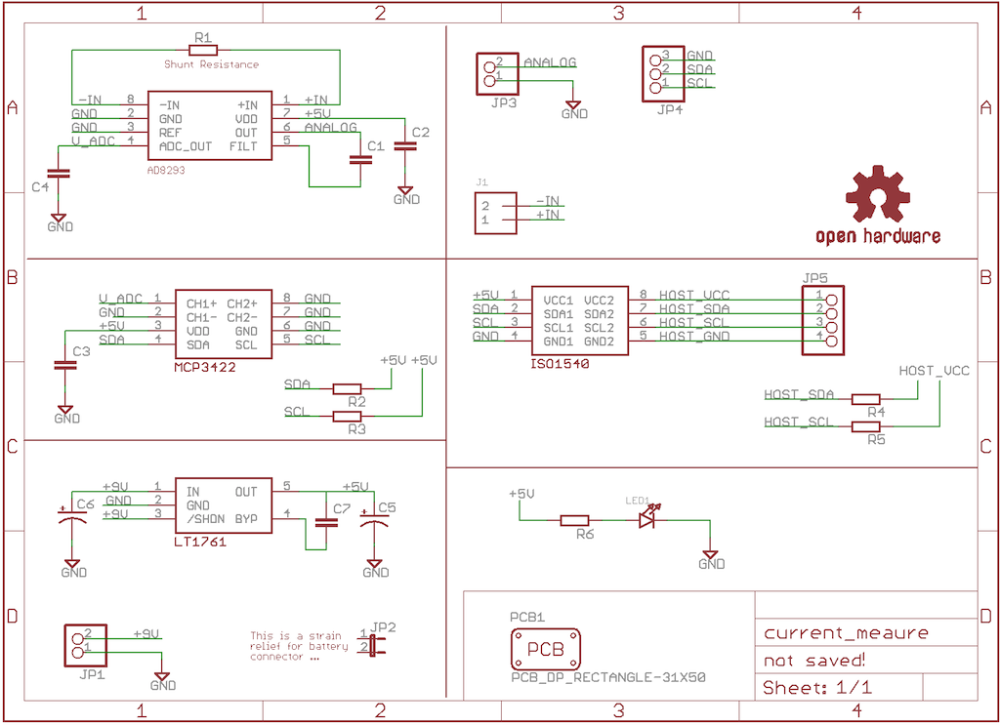
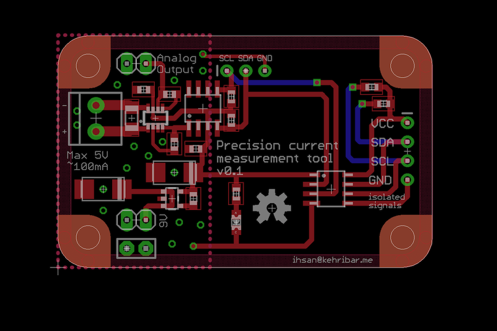
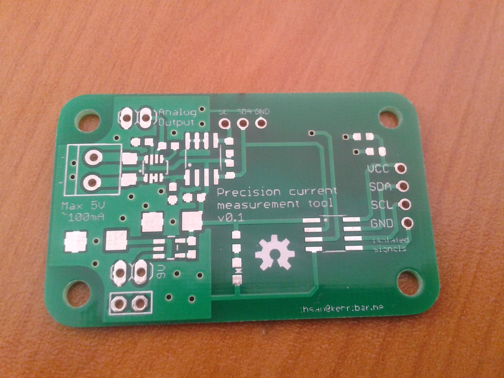

Low current measurement tool
This is my attempt to create a battery powered and isolated digital presicion current measurement tool with low burden voltage. Dave L. Jone's uCurrent board was my inspiration to create this design.
What I've learned from the uCurrent design is that one way to have a low dropout voltage while maintaining to have a high accuracy when making current measurement is to amplifiy the shunt voltage with a known gain. I've used a application spesific instrumentation amplifier from Analog Devices named AD8293. Gain of this amplifier is fixed, which eliminates the need for a high precision resistors.
I've used an 18bit ADC from Microchip named MCP3422. This ADC has its own built-in voltage reference which eliminates the need for an external voltage reference. Lastly, I've used an I2C isolation chip from TI to isolate the battery operated circuit via the I2C host side.
I've ordered parts for this board but haven't populated and tested yet ...
Schematic

Layout

Build

Resources
- Schematic & Layout in PNG format
- Schematic & Layout in EagleCAD format
- Dave L. Jone's uCurrent project: http://www.eevblog.com/projects/ucurrent/
- AD8293 Datasheet: http://www.analog.com/static/imported-files/data_sheets/AD8293G80_160.pdf
{kind=link}
{kind=link}
License
This project is published under the terms of the GNU General Public License, version 3 licence.